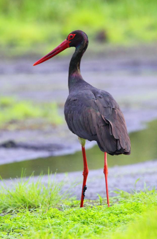

Bocian czarny jest rzadkim ptakiem lęgowym w Polsce = szacuje się ok. 2000 par. W przeciwieństwie do bociana białego, od którego jest nieznacznie mniejszy, stroni od ludzi i gniazda buduje w głębi lasu, choć ostatnio notuje się nieliczne przypadki gniazdowania bliżej zabudowań. Warunkiem jego obecności są mokradła: bagniste łąki, stawy, płytkie rzeki czy zalewiska bobrowe.
| Bocian czarny objęty jest ochroną strefową gniazd. W promieniu 100 m przez cały rok obowiązuje zakaz wszelkich działań mogących płoszyć ptaki - prac leśnych, fotografowania, wycieczek itp. Strefa nie musi być idealnie okrągła i może być węższa od strony granicy lasu. W promieniu 500 m gospodarka leśna jest dozwolona poza okresem lęgowym, tj. od 1 września do 14 marca. |
 |
| Bocian czarny żeruje w płytkich wodach - strumieniach, zakolach rzek, rozlewiskach i wysychających stawach. Brodzi powoli lub stoi nieruchomo w zasadzce, wypatrując ofiar. W nasłonecznionych miejscach rozkłada skrzydła, zacieniając wodę, by wyeliminować odblaski i poprawić widoczność. Zdobycz chwyta błyskawicznym wyrzutem głowy i długiego dzioba. Żywi się głównie małymi rybami, żabami, ślimakami i większymi owadami, rzadziej drobnymi gryzoniami. Niestety, gif z czarnym bocianiem nie udało się znaleść, zamist tego jest normalny bocian |